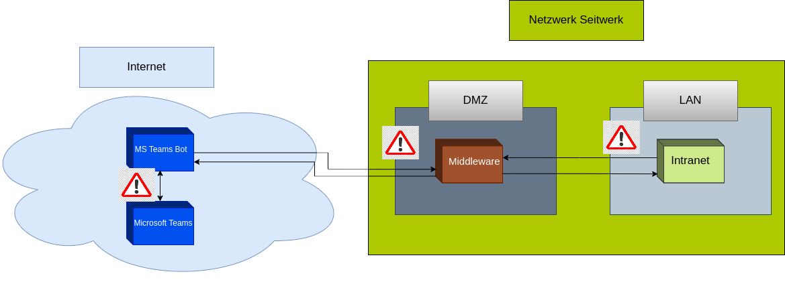

Entwicklung eines Microsoft Teams Bots und einer Middlware
zur Optimierung des internen Informationsaustauschs
Agenda
- Projektumfeld
- Analysephase
- Planung/Entwurf
- Implementierung
- Testing und Deployment
- Fazit
Projektumfeld

Agenda
- Projektumfeld
- Analyse Phase
- Planung/Entwurf
- Implementierung
- Testing und Deployment
- Fazit
Ist-Zustand
- Verwendung des lokal gehosteten Intranets
- Veraltete Oberfläche und CMS-System
- Nur von innerhalb des Netzwerks erreichbar
- Eingeschränkte und ineffiziente Informationsbeschaffung
Soll-Zustand
- Wichtige Informationen identifizieren und bereitstellen
- Intuitive und effiziente Informationsbeschaffung
- Sichere Bereitstellung von Informationen auch von außen
Risikoanalyse
- Datenschutzrisiken
- Zugriff von außerhalb auf interne Netzwerke
- Sicherheitslücken der Systeme
- Sichere Datenübertragung
Agenda
- Projektumfeld
- Analyse Phase
- Planung/Entwurf
- Implementierung
- Testing und Deployment
- Fazit
Projektplanung
- Benötigte Informationsarten identifiziert
- Teams als Benutzeroberfläche
- Aufgabenpakete erstellt
Architekturplanung
- Aufbau des Seitwerk Netzwerks
- Sicherheitskritische Stellen identifiziert
- Middleware als Schutzmechanismus 
Technologien
- Node.js
- Express.js
- Microsoft Bot Framework
- Teams Toolkit
Agenda
- Projektumfeld
- Analyse Phase
- Planung/Entwurf
- Implementierung
- Testing und Deployment
- Fazit
Middleware
- Node.js und Express.js
- Routen für die Datenabfrage
- Token-System
Teams-Bot
- Entwicklung mit Teams Toolkit
- Command-Handler
- Antworten im JSON-Format
- Formatierung der Daten für die Ausgabe

Sicherheitsmechanismen
- Token-Beschaffung in der Middleware
- Benutzerüberprüfung durch den Teams-Bot
- Firewall-Einstellungen
Agenda
- Projektumfeld
- Projektumfeld
- Planung/Entwurf
- Implementierung
- Testing und Deployment
- Fazit
Deployment der Middleware
- Deployment auf Ubuntu-Server
- Git-Clone-Verfahren
- Updates und Fehlerbehebungen per SSH
Deployment des Teams-Bots
- Deployment auf Azure-Servern
- Teams Toolkit für Deployment
- Vorkehrungen im Azure Admin Center
Testing
- Anzeige-Fehler in Teams
- API-Anfragen an das Intranet
- System-Kommunikation nach Deployment
Agenda
- Projektumfeld
- Projektumfeld
- Planung/Entwurf
- Implementierung
- Testing und Deployment
- Fazit
Fazit
- Soll-/Ist-Vergleich
- Lessons Learned
- Ausblick